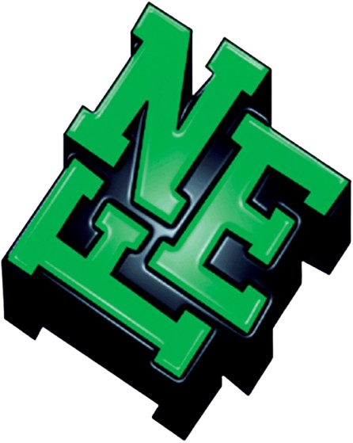

Chefs d'entreprise
Vous y êtes attendus!
Comme la précédente Edition ici à Douala, avec la participation de 198 entreprises, 2136 visiteurs et le
traitement de 1715 offres d'emploi, cette Bourse de l'Emploi est un cadre approprié de rencontres immédiates
et directes
entre les recruteurs et les chercheurs d'emploi.
A cette occasion exceptionnelle, nous vous offrons gratuitement le privilège de :